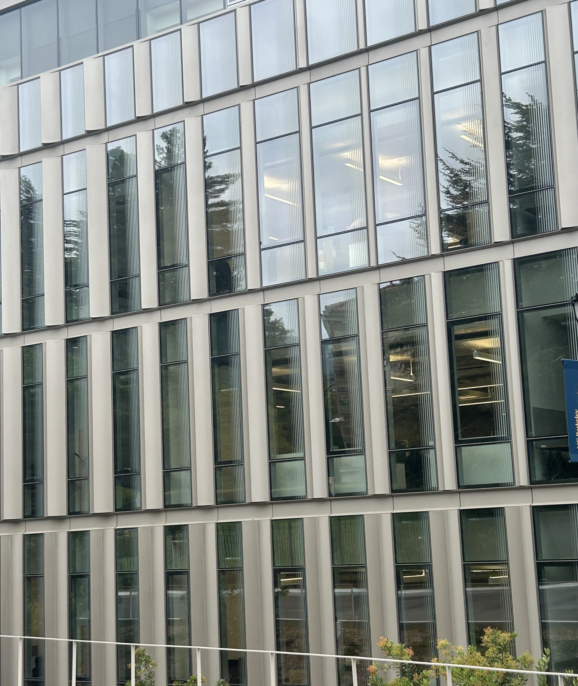

CS 180 · Project 00
Becoming Friends with Your Camera
Part 1: Selfie
The Wrong Way vs. The Right Way


In a close-up portrait, the camera is very close to the subject, so differences in depth across the face become large relative to the camera distance. Features closer to the camera, such as the nose, therefore appear disproportionately larger than features farther away, creating perspective distortion. Moving farther away reduces these relative depth differences, and zooming in keeps the face approximately the same size in the image while producing a flatter, more natural-looking perspective.
Part 2: Architectural Perspective Compression


A similar effect occurs when photographing a building. From close up, different parts of the building are at noticeably different distances from the camera, so nearby portions appear larger and the perspective looks more exaggerated. Moving farther away and zooming in compresses these depth differences, making the building appear flatter and its proportions more uniform. The zoomed-in image does lose some image quality, however, with visible graininess and pixelation, especially in the reflections on the windows.
Part 3: The Dolly Zoom